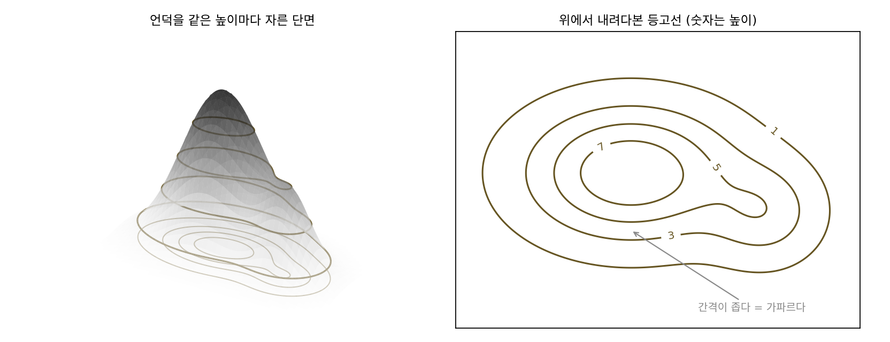
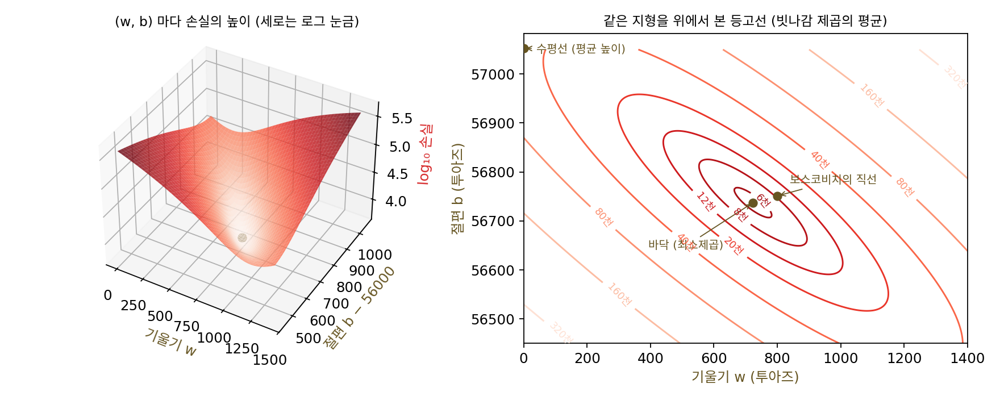
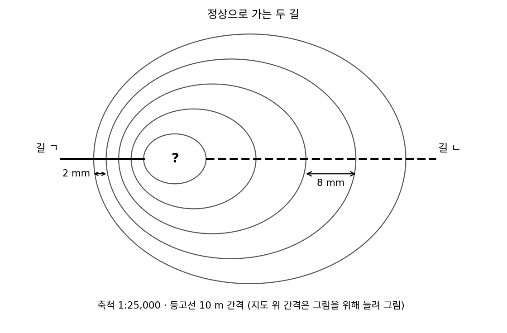
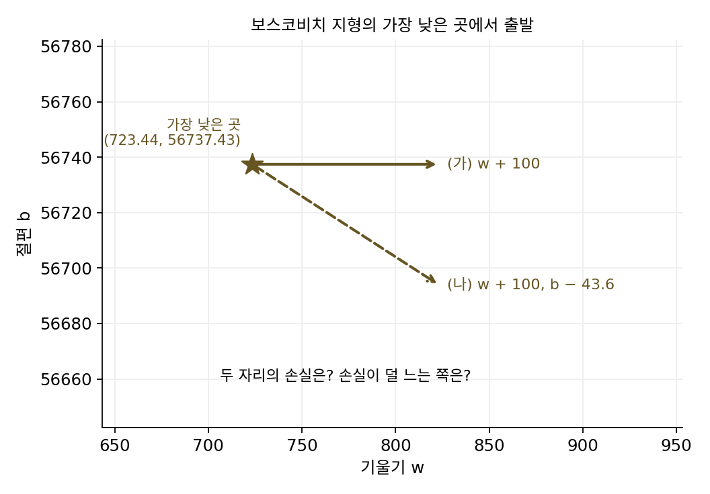
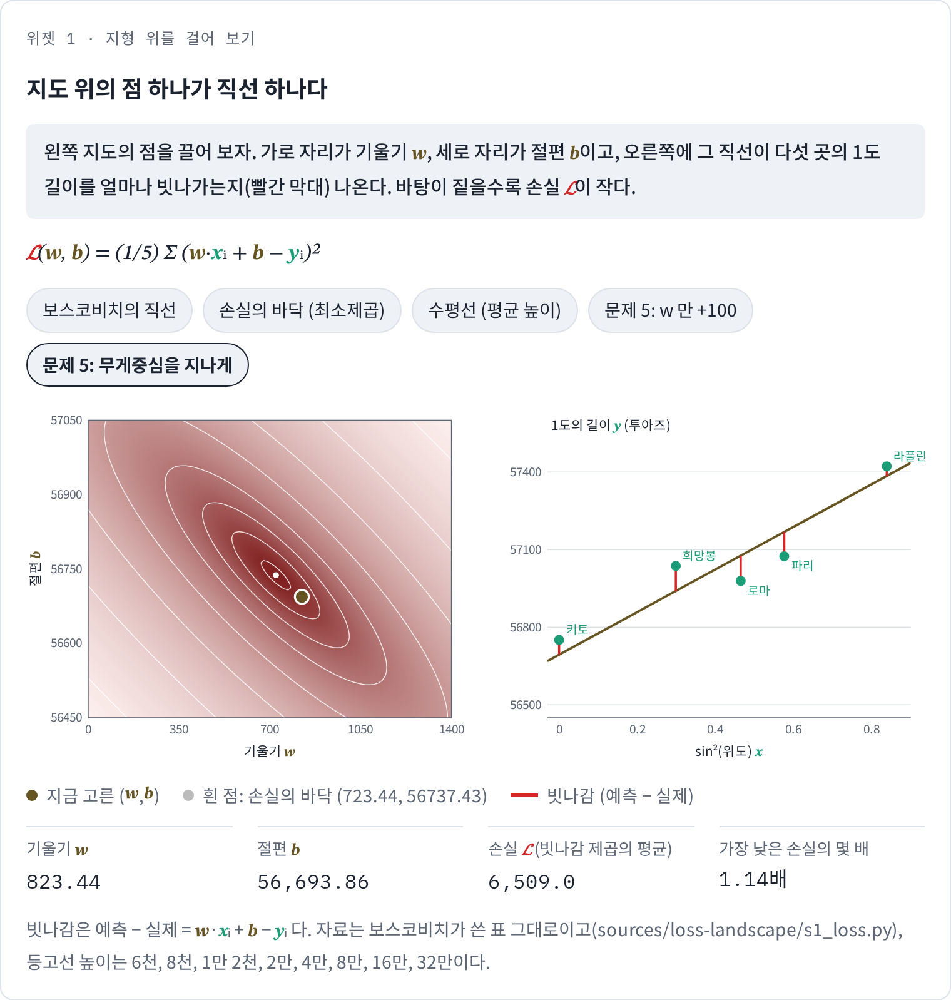
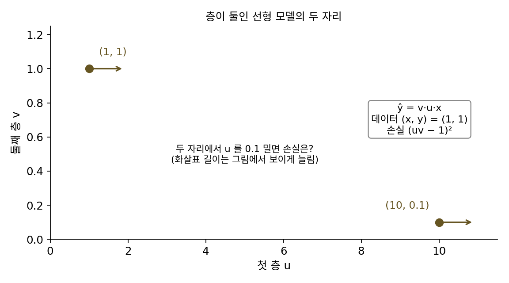

손실 지형: 파라미터 위에 펼친 땅
손실 함수를 정하자 직선 둘을 숫자로 견줄 수 있게 되었지만, 직선은 둘만 있는 것이 아니다. 기울기 w와 절편 b를 조금씩 바꾸면 직선은 끝없이 많고, 직선마다 손실이 하나씩 있다. 둘씩 비교하는 대신 모든 (w, b)의 손실을 한 장에 펼쳐 놓을 수 있다면, 가장 잘 맞는 직선이 어디쯤 있는지, 그 근처가 어떻게 생겼는지 한눈에 보일 것이다. 파라미터 둘에 높이(손실) 하나, 세 개의 숫자를 종이 한 장에 어떻게 그릴까?
역사: 산을 같은 높이로 자르다
세 숫자를 평면에 그리는 방법은 지도를 그리던 사람들이 먼저 찾았다. 1774년 영국 왕립학회는 천문학자 네빌 매스켈린(Nevil Maskelyne)을 스코틀랜드의 산 시할리온(Schiehallion)으로 보냈다. 산이 추를 매단 줄을 얼마나 끌어당기는지 재서 지구의 평균 밀도를 알아내려는 실험이었다. 그러려면 산의 부피와 질량을 알아야 했다. 측량꾼들은 산 둘레의 천 곳이 넘는 지점을 겨냥해 각도를 수천 번 쟀지만, 숫자 수천 개를 지도에 늘어놓아서는 산의 모양이 보이지 않았다.
계산을 맡은 수학자 찰스 허턴(Charles Hutton)은 산을 바닥에 세운 가느다란 기둥들로 나누고, 기둥마다 부피를 구해 더하기로 했다. 기둥마다 높이를 알려면 잰 점들 사이를 메워야 했다. 그는 정해진 높이 간격마다 높이가 같은 점들을 선으로 이어 그 사이를 메웠는데, 이 선들이 오늘날의 등고선이다. 허턴의 계산은 1778년 왕립학회 회보에 실렸다. 흔히 허턴이 등고선을 처음 고안했다고들 하지만, 등고선과 비슷한 선은 그보다 앞서 있었다. 에드먼드 핼리(Edmond Halley)는 1701년에 나침반이 가리키는 방향의 어긋남이 같은 곳들을 이은 선으로 대서양 해도를 그렸고, 필리프 뷔아슈(Philippe Buache)는 1752년에 펴낸 영국 해협 해도에서 바다 깊이가 같은 곳들을 10패덤(약 18 m) 간격의 선으로 이었다. 높이가 같은 점을 잇는 생각이 육지 지도에 자리 잡는 데에는 그 뒤로도 수십 년이 걸렸다.


같은 높이끼리 선으로 잇는 건 지금 보면 너무 당연해 보여요. 그게 18세기 후반에야 나왔다니 늦은 것 같아요.

당연해 보이는 건 우리가 등고선 지도를 어릴 때부터 봐 와서예요. 허턴 앞에 놓인 건 무엇이었죠?

각도를 잰 숫자 수천 개요. 음, 지금이면 잰 점의 좌표와 높이를 넣고 matplotlib의 tricontour를 부르면 그려 주는데요.

그 함수가 속에서 하는 일이 잰 점들 사이를 메워 같은 높이를 찾는 거예요. 허턴은 그 메우기를 손으로 했고, 메운 높이로 기둥마다 부피를 구해 다 더해야 했어요. 같은 높이의 점을 재지 않은 자리에서 찾아내야 했던 거예요.

그러면 등고선은 보기 좋게 그리는 법이기 전에, 잰 점 사이를 메우는 계산이었네요.

손실도 파라미터 둘이 가로·세로 자리고 손실이 높이니까 산이랑 생김새가 같네요. 그럼 손실이 같은 자리끼리 이으면 허턴의 지도처럼 그릴 수 있어요?
보스코비치의 지형
같은 일을 손실에 해 보자. 가로축에 기울기 w를 0부터 1,400까지, 세로축에 절편 b를 56,450부터 57,050까지 잡고, 그 안의 모든 자리에서 손실 𝓛(w, b)를 계산한다. 몇 곳만 먼저 재면 다음과 같다.
| 자리 (w, b) | 어떤 직선인가 | 손실 𝓛 | 가장 낮은 곳의 몇 배 |
|---|---|---|---|
| (723.44, 56737.43) | 손실이 가장 작은 직선 | 5,725.9 | 1 |
| (800, 56751) | 보스코비치의 직선 | 8,387.1 | 1.5 |
| (300, 56900) | 기울기가 작은 직선 | 20,245.6 | 3.5 |
| (0, 57052.6) | 다섯 곳의 평균 높이를 지나는 수평선 | 46,707.4 | 8.2 |
| (0, 56750) | 키토만 맞추는 수평선 | 138,274.2 | 24.1 |
| (1400, 57050) | 지도의 오른쪽 위 모서리 | 410,410.6 | 71.7 |
손실이 같은 자리들을 이으면 등고선이 생기고, 손실을 높이로 세우면 땅이 생기는데, 이 땅은 가운데가 우묵한 그릇이다. 가장 낮은 곳이 (723.44, 56737.43) 한 점이고, 거기서 어느 쪽으로 가든 손실이 올라간다. 그런데 그릇이 둥글지 않다. 등고선은 왼쪽 위에서 오른쪽 아래로 비스듬히 누운 길쭉한 타원이고, 긴 지름이 짧은 지름의 4.3배다. 가장 낮은 곳에서 손실이 1,000만큼 올라가려면, 골짜기를 따라 비스듬히 가는 방향으로는 123.9투아즈를 가야 하지만 골짜기를 가로지르는 방향으로는 28.8투아즈면 된다. 골짜기에서 가장 낮은 자리들을 이은 줄을 골짜기 줄기라 부르자. 골짜기 줄기를 따라가면 w가 1 늘 때 b가 0.47쯤 주므로, 기울기를 키우면서 절편을 그만큼 낮춘 직선들은 손실이 비슷하다.
이렇게 파라미터가 놓이는 공간의 각 자리에 그 자리의 손실을 높이로 세운 것을 손실 지형 (파라미터 위에 펼친 손실의 땅 / loss landscape)이라 한다. 지형 위의 점 하나가 모델 하나(여기서는 직선 하나)이고, 그 점의 높이가 그 모델의 손실이다. 지형에서 손실이 가장 작은 자리를 지형의 바닥이라 부르자. 가장 잘 맞는 직선을 찾는 일은 이 바닥을 찾는 일이 된다.

ML에서: 수백만 차원의 지형을 그리는 법
신경망의 손실 지형은 파라미터 수만큼의 차원을 가져서, 파라미터가 백만 개면 백만 차원의 땅이라 그대로 그릴 수 없다. 그래서 연구자들은 그 땅을 칼로 자르듯 낮은 차원의 단면만 그린다. 이언 굿펠로(Ian Goodfellow), 오리올 비냘스(Oriol Vinyals), 앤드루 색스(Andrew Saxe)는 2015년 국제 학습 표현 학회(ICLR)에 낸 논문 「신경망 최적화 문제를 정성적으로 특징짓기」에서, 학습을 시작한 자리와 학습이 끝난 자리를 곧은 선으로 잇고 그 선 위의 손실을 그렸다. 여러 신경망에서 손실은 그 선을 따라 큰 장애물 없이 내려갔다.
한 줄짜리 단면은 장애물을 놓치기 쉽다. 리하오(Hao Li)와 동료들은 2018년 신경정보처리시스템 학회(NeurIPS)에 낸 「신경망의 손실 지형 시각화」에서, 학습이 끝난 파라미터에서 무작위 방향 두 개를 골라 그 두 방향이 만드는 평면 위의 손실을 등고선과 입체로 그렸다. 파라미터 백만 개를 위의 보스코비치 지형처럼 두 숫자로 줄여 보는 것인데, 이때 방향을 아무렇게나 고르면 그림이 속일 수 있다. 신경망에서는 한 층의 가중치를 10배 하고 다음 층을 1/10배 해도 같은 함수가 되는 경우가 있어서, 같은 모델의 지형이 방향을 어떻게 고르냐에 따라 뾰족해 보이기도 하고 밋밋해 보이기도 한다. 그들은 무작위 방향의 크기를 층의 필터마다 그 필터의 가중치 크기에 맞춰 줄이고 늘이는 「필터 정규화」로 이 문제를 줄였다. 이 어려움은 아래 문제 6에서 작은 모델로 직접 본다.
문제 4. 등산 지도 읽기
축척 1:25,000 등산 지도에서 등고선은 10 m 마다 하나씩 그려져 있다. 산 정상으로 가는 길이 둘 있는데, 길 ㄱ에서는 등고선 사이가 지도 위에서 2 mm, 길 ㄴ에서는 8 mm 다. (가) 두 길의 실제 경사(수평으로 100 m 갈 때 오르는 높이)는? (나) 지도 한가운데 닫힌 등고선 안쪽이 산꼭대기인지 웅덩이인지는 어떻게 알까? (다) 두 등고선이 서로 엇갈려 지나는 지도가 있을 수 있는가?

(가)는 지도에서 2 mm가 실제로 2 × 25,000 = 50,000 mm = 50 m니까, 50 m 가는 동안 10 m 오르면 100 m에 20 m예요. 길 ㄴ은 8 mm면 200 m니까 100 m에 5 m고요. 등고선이 촘촘한 ㄱ이 네 배 가파르네요.
(나)는 닫힌 선 하나만 보면 몰라. 선에 적힌 높이를 봐야 해. 안쪽으로 갈수록 숫자가 커지면 꼭대기, 작아지면 웅덩이야.
(다)는 어때요? 두 선이 한 점에서 엇갈린다면 그 점의 높이는 얼마일까요?
한 선이 100 m이고 다른 선이 110 m면, 엇갈리는 점은 100 m이면서 110 m여야 해요. 한 자리의 높이는 하나니까 그럴 수 없어요. 손실 지형도 같아요. 한 (w, b)의 손실은 하나로 정해지니까 손실이 다른 두 등고선은 만나지 않아요.

보스코비치 지형에서 골짜기를 가로지르는 쪽 등고선이 촘촘했던 게 길 ㄱ이었네요. 등고선 간격만 보고도 어디가 예민한지 알 수 있구나. 과제 점수표에서 1점 차이로 학점이 갈리는 구간이 촘촘한 등고선이에요.
문제 5. 골짜기는 왜 비스듬한가
보스코비치 지형의 가장 낮은 곳 (723.44, 56737.43) 에서 출발한다. (가) 기울기 w 만 100 늘리면 손실은 얼마나 느는가? (나) w 를 100 늘리면서 절편 b 를 43.6 줄이면? (다) (나)의 43.6 은 어디서 나온 숫자이고, 이것이 골짜기의 방향과 무슨 관계인가? (풀어 본 뒤 위젯 1 의 「문제 5」 단추 둘로 확인해 보자.)

(가)는 손실이 5,725.9에서 8,407.0으로, 2,681 늘어요. (나)는 6,509.0이라 783만 늘고요. 절편을 같이 줄였는데 오히려 덜 늘었어요. 둘 다 바꿨으니까 더 많이 늘 줄 알았는데요.
직선 그림으로 보면 (가)와 (나)의 직선은 각각 어떻게 움직였죠? 다섯 점의 가운데쯤에서 직선이 어디를 지나는지 봐요.
(가)는 직선이 왼쪽 끝을 붙잡은 채 오른쪽만 들려서, 점들 한가운데에서도 위로 떠 버려요. (나)는 직선이 가운데 어딘가를 축으로 시소처럼 돌아요.
그 축이 어디지… 축에서는 기울기를 늘려 올라간 만큼을 절편 43.6이 그대로 깎아 줘야 해. 그런 x를 찾아보면 0.4357이야. 이거 x의 평균이네. 기울기를 100 늘리면 거기서 직선이 43.57 올라가니까.
가장 낮은 직선은 다섯 점의 어디를 지나죠?
무게중심 (0.4357, 57052.6)이요. 그럼 (나)는 무게중심을 지나는 채로 기울기만 바꾼 거네요.

그래서 손실이 덜 늘었네요. 무게중심을 지나며 돌리는 방향과 그냥 위아래로 옮기는 방향은, 같은 100만큼 갈 때 손실이 늘어나는 양이 얼마나 다를까요?
절편만 100 바꾸면 모든 빗나감이 100씩 바뀌니까 손실이 100² = 10,000 늘어요.
돌리는 쪽은요? 무게중심에서 옆으로 떨어진 점일수록 더 빗나가게 되죠.
각 점은 100 × (x − 평균)만큼 빗나가니까, 제곱해서 평균 내면 100² × (x의 분산 0.0783) = 783이에요. 민준이가 잰 783이랑 같네요. 열세 배쯤 차이가 나요.
그럼 골짜기는 그 돌리는 방향으로 길게 누워 있는 거네.

응, 「무게중심을 지나는 직선들」의 방향이고, w 1당 b −0.44쯤이야. 지형에서 잰 골짜기 방향 −0.47과 거의 같아. 분산이 작으면 이 방향이 더 밋밋해지겠다. 통계 시간에 x가 넓게 퍼져야 회귀 직선의 기울기를 믿을 만하게 잴 수 있다고 배운 게 같은 얘기야.

데이터의 x가 좁은 범위에 몰려 있으면 기울기를 꽤 틀려도 손실이 별로 안 늘어서, 기울기가 잘 안 정해지는 거군요. 실험 보고서에서 측정 범위를 너무 좁게 잡았다가 조교님한테 기울기 오차가 크다고 지적받은 적이 있어요.

문제 6. 같은 함수, 다른 지형
층이 둘인 아주 작은 선형 모델 ŷ = v·u·x 를 데이터 한 점 (x, y) = (1, 1) 에 맞춘다. 손실은 (uv − 1)² 이다. (가) 손실이 0 인 자리는 어디인가? (나) (u, v) = (1, 1) 과 (10, 0.1) 은 같은 함수인가? 두 자리에서 u 를 0.1 만큼 밀었을 때 손실은? (다) (나)에서 본 두 자리의 손실 차이가 리하오와 동료들의 「필터 정규화」와 무슨 관계인가?

(가)는 uv = 1이면 되니까 (1, 1)이요. 손실이 0인 자리가 한 점이고요.
(2, 0.5)는요? (10, 0.1)은요?
아, 둘 다 곱이 1이네요. 손실이 0인 자리가 점이 아니라 곡선 uv = 1 전체예요. 보스코비치 지형처럼 가장 낮은 곳이 한 점인 지형만 있는 게 아니구나.
(나)에서 (1, 1)과 (10, 0.1)은 둘 다 ŷ = x라서 같은 함수야. 그런데 u를 0.1 밀면 (1, 1)에서는 손실이 0.01이고 (10, 0.1)에서는 0.0001이야. v를 0.1 밀면 반대로 0.01과 1.0이고. 같은 함수인데 (10, 0.1)에서는 한쪽으로는 아주 밋밋하고 다른 쪽으로는 백 배 가파르게 보여.
이 두 자리 가운데 어느 쪽이 「더 뾰족한 바닥」이라고 해야 할까요?

그게 이상해요. v 방향의 휨은 (1, 1)에서 2, (10, 0.1)에서 200이라 숫자로는 (10, 0.1)이 훨씬 뾰족한데, 둘은 같은 함수예요. 모델이 같은데 뾰족한 정도가 다르다고 하면 그 숫자는 모델이 아니라 좌표를 고른 방식을 잰 거예요.
그래요. 그럼 두 층을 각자 자기 크기에 비례해서, 예를 들어 둘 다 자기 값의 10%만큼 밀면요?
(1.1, 1.1)과 (11, 0.11)이니까… 둘 다 곱이 1.21이에요. 손실이 똑같이 0.0441이네요.
크기에 맞춰 밀면 같은 함수는 같은 지형으로 보이는구나.
필터 정규화는 무작위 방향을 무엇에 맞췄죠?
필터마다 그 필터의 가중치 크기요. 이거였네요. 선형대수 시간에 기저를 바꾸면 행렬의 성분은 바뀌어도 고윳값 같은 건 안 바뀐다고 배운 것처럼, 좌표에 따라 바뀌는 숫자와 안 바뀌는 숫자를 가려야 하는 거예요.
신경망 지형 그림을 보고 「이 모델은 바닥이 평평하다」고 말하려면, 그림을 어떤 방향으로 잘랐는지부터 물어봐야겠어요. 같은 키를 센티미터로 적느냐 미터로 적느냐에 따라 그래프 기울기가 백 배 달라 보였던 실험 보고서가 떠올라요.